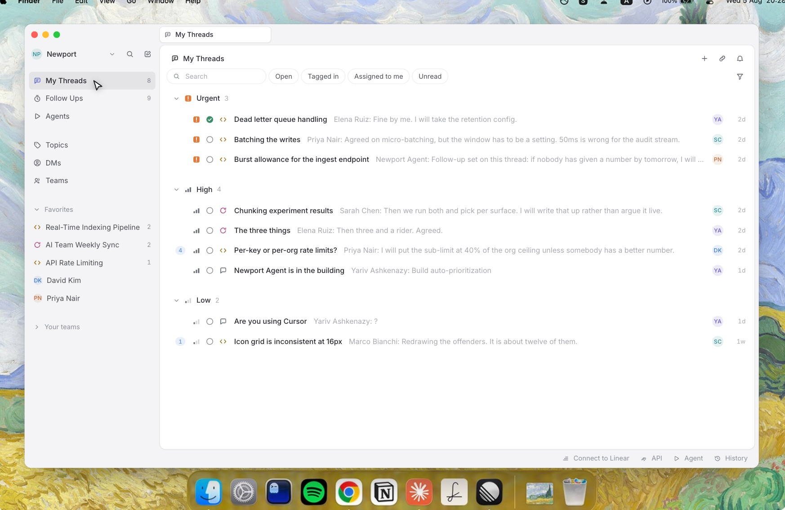
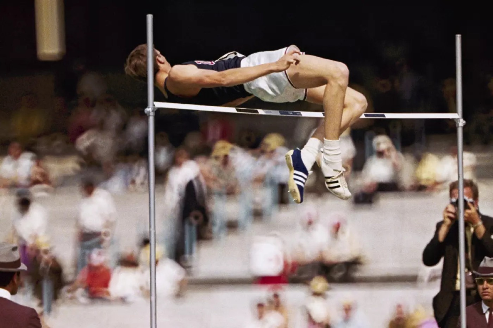

Announcing Fosbury
Introducing the more enjoyable and efficient way for product teams to communicate, with fosbury.ai
How a team communicates is one of the most critical activities of any product company. Where decisions get made and how context travels compound into how fast a company moves and whether the work is any good.
This is why messaging tools are some of the most widely used software ever created. But most of the leading tools on the market were designed over a decade ago, for an office where everyone sat in the same room on the same clock. Their core concept — one endless stream, everyone present, newest at the bottom — has not evolved much since. Our teams, our hours, and our expectations have changed greatly.
Our founding team has built and scaled products at some of the biggest technology companies in the world. We have seen first hand how teams grow from a handful of people to thousands, and what it costs to spend the day getting interrupted by the tool that is supposed to help you work. We grew frustrated with how noisy, shallow and out of step these tools are with the way teams actually work today.
It is rare to find a top product company in Silicon Valley that truly works asynchronously, yet nearly all of them describe themselves that way. The app is still open all day and the pings still arrive. Teams have adapted with quiet hours and no-meeting days, yet the tools have not followed. Engineering and product work is exactly the kind of work that requires depth and focus.
This is why we decided to start Fosbury. Our vision is to make asynchronous communication something teams actually do, instead of something they claim to do.

The name is borrowed. In 1968, Dick Fosbury won Olympic gold by going over the bar backwards. Everyone else was training harder at the same technique. He changed the technique, and within a decade nobody jumped the old way. Work communication is due for the same kind of correction — not a faster stream, a different one.

Here’s how we’re going about doing it:
- Speed and zero friction. This is a tool you will open dozens of times a day, so it has to disappear into your hands. Keyboard-first, instant, no loading states between you and the thought you are trying to send.
- Structure by default. Public channels only. Conversations can be prioritized, assigned, resolved and closed — so a thread has a state and an outcome, not just a scroll position.
- Async by default. Depth over reaction time. Nothing in Fosbury assumes you are online, rewards you for being online, or punishes you for being away.
This is just the start, and much more will follow. We know this will be a long journey and we are excited to share our learnings and thinking as we make progress.
Today, we are opening Fosbury to teams and companies in public alpha. If you want to get in early and shape where Fosbury goes, sign up here.